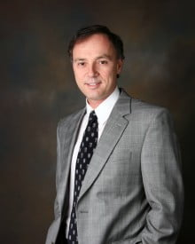
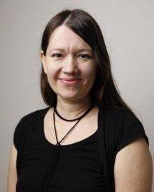

Hemant Kumar Rath
Principal Scientist & Distinguished Engineer, TCS Research and Innovation, India
Hemant is a Senior Member of IEEE and IARCS, holds MTech and Ph.D. from IIT Bombay, India, and BE in EL&TCE from VSSUT Burla, Odisha. He has close to 25 years of experience in academics, research, and industry. At present, Hemant is a Principal Scientist at TCS Research & Innovation, Bhubaneswar/ Bangalore. His research interests include Augmented Robotics, Fog computing, Mobile Edge computing, QoS in Networks, 5G Network Design, Software Defined Networks, Network Security, etc. He has authored many research papers, co-authored a book, delivered several talks, and has more than 60 granted patents in the broad areas of communication and networking. Hemant has received several awards including the Distinguished Engineer Award in TCS. He is active in national and international standardization (IoT -ITU-T, GISFI, TSDSI, IEEE) in the areas of networking and communications. Hemant is also teaching at IIT Bhubaneswar (School of Electrical Sciences) as an Adjunct Faculty since July 2019.

Barun Kumar Saha
Senior R&D Engineer, Hitachi Energy, India
Dr. Barun Kumar Saha is a Senior R&D Engineer with Hitachi Energy, Bangalore, India. He received a Ph.D. degree in Computer Science and Engineering from the Indian Institute of Technology Kharagpur, India. Dr. Saha primarily works on AI and network management solutions. His research has been published in several journals, IEEE Transactions, and conferences. He has also co-authored a textbook, Opportunistic Mobile Networks: Advances and Applications, published by Springer. He is a Member of IEEE. Further details about Dr. Saha can be found at https://barunsaha.me/

Tripti Swarnkar
Professor, Department of Computer Application, S 'O' A University, India
Tripti Swarnkar received a Ph.D. degree in Computer Science & Engineering from IIT Kharagpur WB India. She is currently a Professor in the Department of Computer Application, Faculty of Engineering & Technology Siksha 'O' Anusandhan Deemed to be University. At present, she has more than two decades of teaching experience in the field of Computer Science & Engineering She is currently guiding eight Ph.D. and five have already been awarded. Dr. Swarnkar's principal research interest is Machine learning, Omics data analysis, and Medical image analysis. Her aspiration is to work at the interface of these different fields or Multidisciplinary Environments. She is IEEE senior member and IEEE EMBS & GRSS member, currently chairing the IEEE Bhubaneswar Subsection WIE Affinity group. She has organized many conferences as well as workshops successfully, currently chaired the Women in imaging session of IEEE ISBI-2022. She is also a Principal Investigator of a Multidisciplinary Project on “Validation of Artificial Intelligence (AI) based models in screening and diagnosis of diseases in routine clinical practices”, sponsored by Intel India